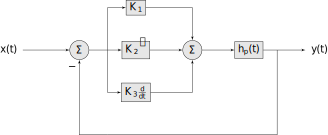
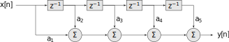

Lecture 3
Time Domain Analysis of LTI Systems
2025-08-11
In today’s lecture we continue our review of material from ECE 2714. We will review convolution in CT and DT, associated properties, and do some examples.
Convolution in CT
Recall from ECE 2714 that linearity and time-invariance, plus the sifting property of the delta function leads directly to the convolution integral for CT systems analysis. We consider an input signal \(x(t)\) to be composed of an unaccountably infinite linear combination of weighted delta functions
\[x(t) = \int\limits_{-\infty}^{\infty} x(\tau)\delta(t-\tau)\; d\tau\]
By linearity then the output is given by
\[y(t) = \int\limits_{-\infty}^{\infty} x(\tau)h(t-\tau)\; d\tau \equiv x * h = h * x\]
where the signal \(h(t)\) is the impulse response of the system.
This approach to analysis works for any CT LTI system, stable or unstable, as long as the convolution integral converges.
We can build up a table of convolutions by evaluating the convolution integral for a set of primitive functions. Some examples
Example 1: Convolution of delta with any function:
\[\begin{aligned} \delta(t) * x(t) &= \int\limits_{-\infty}^{\infty} \delta(\tau)x(t-\tau)\; d\tau & \text{ from definition of convolution}\\ &= x(t) & \text{ by the sifting property of delta function} \end{aligned}\]
Example 2: Convolution of two step functions:
\[\begin{aligned} u(t) * u(t) &= \left\{\begin{array}{cc} 0 & t < 0\\ \int\limits_{0}^{t} d\tau & t \geq 0 \end{array}\right.\\ &= \left\{\begin{array}{cc} 0 & t < 0\\ t & t \geq 0 \end{array}\right.\\ &= t\cdot u(t) \end{aligned}\]
Example 3: Convolution of causal exponential \(e^{a t}\, u(t)\), \(a \neq 0\), and unit step:
\[\begin{aligned} e^{a t}u(t) * u(t) &= \left\{\begin{array}{cc} 0 & t < 0\\ \int\limits_{0}^{t} e^{a \tau}d\tau & t \geq 0 \end{array}\right.\\ &= \left\{\begin{array}{cc} 0 & t < 0\\ \frac{1}{a}\left(e^{at} - 1\right) & t \geq 0 \end{array}\right.\\ &= \frac{e^{at} - 1}{a}\cdot u(t) \end{aligned}\]
Such tables of precomputed integrals plus a set of properties allows us to preform convolution on a wide array of signals without integrating directly. Given arbitrary signals \(x_1(t), x_2(t)\), etc.
commutivity: \(x_1(t) * x_2(t) = x_2(t) * x_1(t)\)
distributivity: \(x_1(t) * [x_2(t) + x_3(t)] = [x_1(t)*x_2(t)] + [x_1(t)*x_3(t)]\)
associativity: \(x_1(t) * [x_2(t) * x_3(t)] = [x_1(t)*x_2(t)] * x_3(t)\)
time shift: \(x_1(t-\tau_1)*x_2(t-\tau_2) = \left. [x_1 * x_2](t) \right|_{t\rightarrow \tau_1 + \tau_2}\)
multiplicative scaling, \(a,b\in\mathbb{C}\): \([ax_1(t)]*[bx_2(t)] = ab[x_1(t) * x_2(t)]\)
An example: let \(x_1(t) = 5e^{4t}u(t) + 7e^{-t}u(t-1)\) and \(x_2(t) = u(t)\). Then
\[\begin{aligned} (x_1 * x_2)(t) &= \left[ 5e^{4t}u(t) + 7e^{-t}u(t-1) \right] * u(t) &\\ &= \left[ 5e^{4t}u(t) \right] * u(t) + \left[ 7e^{-t}u(t-1) \right] * u(t) & \text{distribution property}\\ &= 5\left[e^{4t}u(t) \right] * u(t) + 7\left[e^{-t}u(t-1) \right] * u(t) & \text{scaling property}\\ &= 5\left[e^{4t}u(t) \right] * u(t) + 7e^{-1}\left. \left[e^{-t}u(t) \right] * u(t)\right|_{t\rightarrow t-1} & \text{time shift property}\\ &= 5 \frac{e^{4t} - 1}{4}\cdot u(t) + 7e^{-1}\left. \frac{e^{-t} - 1}{-1}\cdot u(t)\right|_{t\rightarrow t-1} & \text{table application}\\ &= \frac{5}{4}\left(e^{4t} -1 \right)u(t) 7e^{-1} \left(e^{-(t-1)} -1 \right)u(t-1) & \text{simplify} \end{aligned}\]
Recall that an important convolution is when the input is the complex exponential; \(x(t) = e^{st}, s\in\mathbb{C}\) and the impulse response is a arbitrary function \(h(t)\). Then the output is given by
\[\begin{aligned} y(t) &= h(t) * e^{st}\\ &= \int\limits_{-\infty}^{\infty} h(\tau)e^{s(t-\tau)}\; d\tau \\ &= e^{st} \int\limits_{-\infty}^{\infty} h(\tau)e^{s\tau)}\; d\tau \\ &= e^{st} H(s) \text{ for } s\in \mathcal{R} \subseteq \mathbb{C} \end{aligned}\] where \(H(s)\)
is the Eigenvalue for the signal \(e^{st}\),
is called the Transfer Function or System Function,
is the Laplace transform of the impulse response, and
is defined for the subset of the complex plane called the region-of-convergence.
The Laplace transform will be a major focus of this course, where we will see how to apply it to signals other than the complex exponential.
CT block diagrams and convolution are related for the following motifs:
basic block
\(y(t) = h(t)*x(t)\) series motif
\(y(t) = [h_1(t)*h_2(t)]*x(t)\) parallel motif
\(y(t) = [h_1(t) + h_2(t)]*x(t)\) feedback motif

\(y(t) = h_3(t)*h_1(t)*x(t)\) where \(h_3\) is the inverse system of \(\delta(t) + h_1(t)*h_2(t)\)
One of the most useful parts of the Laplace methods developed in this course is the simplification of block diagram manipulations, in particular the feedback motif.
The most basic building block for CT systems is the integrator:
Block diagrams and the related signal flow graphs are a good way to visualize and manipulate more complex systems. For example in controls the following block diagram describes the classic PID (proportional, integral, derivative) controller for a system "plant" whose impulse response is \(h_p(t)\):

By the end of the course we will be better able to analyze and design systems of this complexity, including determining their stability.
DT Convolution
For DT systems the convolution integral of CT system theory becomes an countably infinite sum. Using the sifting property of the DT delta function we can write an input signal as the sum of weighted, time-shifted impulse functions
\[x[n] = \sum\limits_{m = -\infty}^{\infty} x[m]\delta[n-m]\]
By linearity and time-invariance then the output is given by
\[y[n] = \sum\limits_{m = -\infty}^{\infty} x[m]h[n-m]\] where \(h[n]\) is the impulse response of the DT system.
As for CT systems, this analysis works for any DT LTI system as long as the sum converges.
We can build up a table of convolution results. Some examples
Example 4: Convolution of delta with any function:
\[\begin{aligned} \delta[n] * x[n] &= \sum\limits_{m = -\infty}^{\infty} \delta[m]x[n-m] & \text{ from definition of convolution}\\ &= x[n] & \text{ by the sifting property of delta function} \end{aligned}\]
Example 5: Convolution of two step functions:
\[\begin{aligned} u[n] * u[n] &= \left\{\begin{array}{cc} 0 & n < 0\\ \sum\limits_{m = 0}^{n} (1) & n \geq 0 \end{array}\right.\\ &= \left\{\begin{array}{cc} 0 & n < 0\\ n+1 & n \geq 0 \end{array}\right.\\ &= n\cdot u[n] \end{aligned}\]
Example 6: Convolution of causal real exponential \(\gamma^{n}\, u[n]\), \(\gamma \neq 1\), and unit step:
\[\begin{aligned} \gamma^{n}u[n] * u[n] &= \left\{\begin{array}{cc} 0 & n < 0\\ \sum\limits_{m = 0}^{n} \gamma^{m} & n \geq 0 \end{array}\right.\\ &= \left\{\begin{array}{cc} 0 & n < 0\\ \frac{\gamma^{n+1} - 1}{\gamma - 1} & n \geq 0 \end{array}\right.\\ &= \frac{\gamma^{n+1} - 1}{\gamma - 1} \cdot u[n] \end{aligned}\]
Such tables of precomputed sums plus a set of properties allows us to preform convolution on a wide array of signals without integrating directly. Given arbitrary signals \(x_1[n], x_2[n]\), etc.
commutivity: \(x_1[n] * x_2[n] = x_2[n] * x_1[n]\)
distributivity: \(x_1[n] * (x_2[n] + x_3[n]) = (x_1[n]*x_2[n]) + [x_1[n]*x_3[n]]\)
associativity: \(x_1[n] * (x_2[n] * x_3[n]) = (x_1[n]*x_2[n]) * x_3[n]\)
index shift: \(x_1[n-m_1)*x_2[n-m_2] = \left. [x_1 * x_2][n] \right|_{n\rightarrow m_1 + m_2}\)
multiplicative scaling, \(a,b\in\mathbb{C}\): \((ax_1[n])*(bx_2[n]) = ab(x_1[n] * x_2[n])\)
An example. Let \(x_1[n] = 2^nu[n-4]\) and \(x_2[n] = 5u[n+1]\). Then
\[\begin{aligned} x_1 * x_2 &= \left\{ 2^nu[n-4]\right\}* \left\{ 5u[n+1] \right\}\\ &= \left\{ 2^4 2^{n-4}u[n-4]\right\}* \left\{ 5u[n+1] \right\}\\ &= \left. 2^4 (5)\left\{ 2^{n}u[n]\right\}* \left\{u[n] \right\}\right|_{n \rightarrow n-3}\\ &= \left. 80 \left\{ \frac{2^{n+1} - 1}{2 - 1}u[n]\right\}\right|_{n \rightarrow n-3}\\ &= 80\left( 2^{n-2} - 1\right)u[n-3] \end{aligned}\]
Another important example is when the input is the complex exponential, \(x[n] = z^n\; z\in\mathbb{C}\). Given an impulse response of the system \(h[n]\) then the output is given by:
\[\begin{aligned} y[n] &= h[n] * z^{n}\\ &= \sum\limits_{m = -\infty}^{\infty} h[m]\, z^{n-m} \\ &= z^{n} \sum\limits_{m = -\infty}^{\infty} h[m]z^{-m} \\ &= z^{n} H(z) \text{ for } z\in \mathcal{R} \subseteq \mathbb{C} \end{aligned}\] where \(H(z)\)
is the Eigenvalue for the signal \(z^{n}\),
is called the Transfer Function or System Function,
is the Z transform of the impulse response, and
is defined for the subset of the complex plane called the region-of-convergence.
The Z transform will be a major focus of this course, where we will see how to apply it to signals other than the complex exponential.
DT systems can also be represented by block diagrams. The basic motifs and properties are the same as for CT systems with the convolution being discrete.
The most basic block for DT systems is the unit delay:
As for CT systems, block diagrams and the related signal flow graphs are a good way to visualize and manipulate more complex systems. For example in DSP a 4th order finite impulse response (FIR) filter has the block diagram:

Example Problems
Given the CT system below where \(x(t) = e^{-5t}u(t)\). Find \(y(t)\).
Solution:
reading the block diagram: \(y(t) = -5\int y + \int x\)
taking the derivative of both sides: \(y^\prime = -5y + x\)
in standard LCCDE form: \(y^\prime + 5y = x\)
the corresponding impulse response: \(h(t) = e^{-5t}u(t)\)
output using convolution and table \[\begin{aligned} y(t) &= h(t) * x(t)\\ &=\left\{ e^{-5t}u(t) \right\}*\left\{ x(t) \right\}\\ &=\left\{ e^{-5t}u(t) \right\}*\left\{ e^{-5t}u(t) \right\}\\ &= te^{-5t}u(t) \end{aligned}\]
Given the 4th order FIR filter block diagram above, find the output \(y[n]\) if \(x[n] = u[n] - u[n-5]\).
Solution:reading the block diagram \[y[n] = a_5 x[n-4] + a_4 x[n-3] + a_3 x[n-2] + a_4 x[n-1] + a_1 x[n]\]
the corresponding impulse response \[h[n] = a_5 \delta[n-4] + a_4 \delta[n-3] + a_3 \delta[n-2] + a_4 \delta[n-1] + a_1 \delta[n]\]
the output \[\begin{aligned} y[n] &= h[n]*x[n]\\ &= a_5\delta[n-4]*u[n] - a_5\delta[n-4]*u[n-5]\\ &\quad + a_4\delta[n-3]*u[n] - a_4\delta[n-3]*u[n-5]\\ &\quad + a_3\delta[n-2]*u[n] - a_3\delta[n-2]*u[n-5]\\ &\quad + a_2\delta[n-1]*u[n] - a_2\delta[n-1]*u[n-5]\\ &\quad + a_1\delta[n]*u[n] - a_1\delta[n]*u[n-5]\\ &= a_5u[n-4] - a_5u[n-9]\\ &\quad + a_4u[n-3] - a_4u[n-8]\\ &\quad + a_3u[n-2] - a_3u[n-7]\\ &\quad + a_2u[n-1] - a_2u[n-6]\\ &\quad + a_1u[n] - a_1u[n-5]\\ \end{aligned}\]